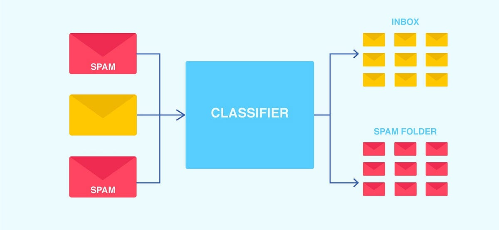
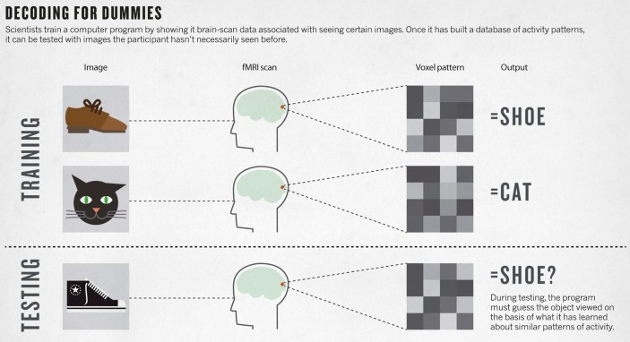
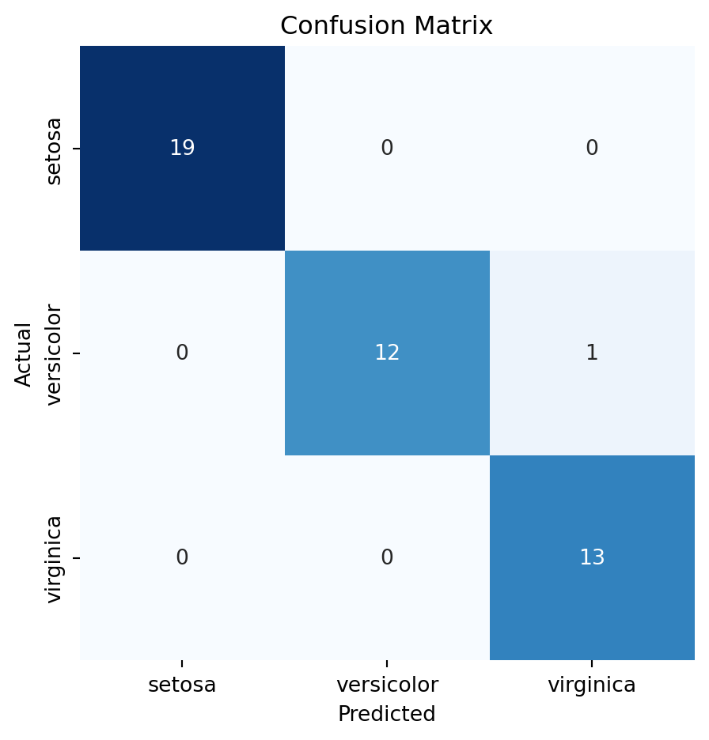
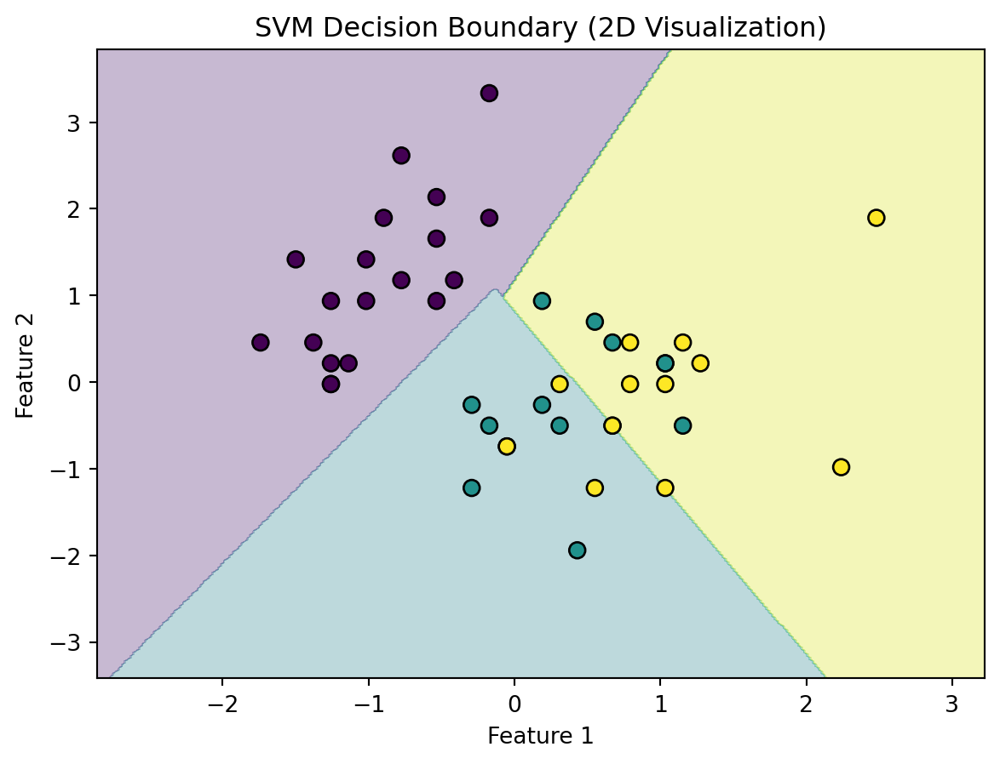

# Import necessary libraries
import numpy as np
from sklearn import datasets
from sklearn.model_selection import train_test_split
from sklearn.preprocessing import StandardScaler
from sklearn.svm import SVC
from sklearn.metrics import classification_report, confusion_matrix
import matplotlib.pyplot as plt
import pandas as pd
import seaborn as sns
from tabulate import tabulateIntroduction
Support Vector Machines (SVMs) are powerful supervised learning algorithms, which are most commonly used for classification and regression tasks. SVMs work well for both binary and multi-class classification problems, as they find a hyperplane that best separates different classes in the data. In this blog post, we will explore how to use SVM classifiers in Python with the scikit-learn library.
Classification is essential in machine learning, as it allows data to be grouped into predefined classes. It is also highly prevalent in the world today. For example, email filtering relies heavily on classification algorithms to distinguish between spam and legitimate emails. By training classifiers on labeled data where emails are categorized as either “spam” or “not spam,” classifiers learn to identify the features that are diagnostic of a specific class (e.g. key words, sender addresses, email structure). Once trained, classifiers can automatically classify new incoming emails to either the inbox or the spam folder, significantly improving the user experience by reducing unwanted messages and allowing people to focus on relevant communication.

Classification can also reveal complex relationships between classes and patterns in the data. For example, in the context of fMRI data, classification helps researchers understand the relationship between neural activity patterns and cognitive or behavioral phenomena. Imagine we are showing a subject pictures of faces, scenes, and objects while recording their brain activity using fMRI. We know which picture was shown at each time point, allowing us to label the type of stimulus. The brain signals from each time point represent the features of that particular picture. With this labeled data, we can train a classifier to distinguish between images of faces, scenes, and objects. After training the classifier, we need to evaluate how well it can predict the category of an image it hasn’t seen before, like a new picture of a face. To verify this, we test it on a different set of images and measure its prediction accuracy. If it can predict the correct category more often than random guessing (which would yield a 33.33% accuracy with three classes), we can infer that the classifier has successfully learned to decode the brain signals associated with each stimulus type. If you are interested in learning more about classification for fMRI data, I would recommend checking out the tutorials from the Brain Imaging Analysis toolKit (BrainIAK).

To gain some intuitions on how to use SVMs, we will walk through an example analysis on the Iris dataset, a popular dataset in machine learning.
Setup
Before we dive into our example, ensure you have scikit-learn installed by following the installation instructions specific to your operating system. You will also need to install the matplotlib, pandas, seaborn, jupyter, and tabulate packages for data visualization. For most systems, running the below command in your bash shell should effectively download both packages:
pip install scikit-learn matplotlib pandas seaborn jupyter tabulateNext, we need to import the required libraries in Python:
Dataset preparation
We are ready to run a classification analysis on the Iris dataset.
The Iris dataset contains 150 samples, with each sample representing one of three species of iris flowers: Setosa, Versicolor, and Virginica. Each flower is described by four features: sepal length, sepal width, petal length, and petal width. The goal is to classify each flower into one of the three species based on these measurements. The simplicity and clear separability of the classes make this dataset an excellent choice for demonstrating the power and effectiveness of SVM classifiers.
Our goal will be to classify different species of iris flowers based on their features.
To ensure our classification model generalizes well to unseen data, we need to evaluate its performance on a separate subset of the data that isn’t used for training. To do this, we split the dataset into a training set and a testing set. In the provided code, train_test_split is used to randomly divide the data by allocating 70% to the training set (X_train and y_train) and 30% to the testing set (X_test and y_test). The random_state parameter ensures that the split is reproducible by producing the same random results each time.
SVM classifiers are sensitive to feature scaling because they aim to find a hyperplane that best separates the classes. If features are not standardized, those with larger numeric ranges could disproportionately influence the classification, leading to a skewed decision boundary. To handle this, the StandardScaler is used to standardize the features by transforming them to have zero mean and unit variance. This makes sure that all features contribute equally to the model.
# Load the Iris dataset
iris = datasets.load_iris()
X = iris.data
y = iris.target
# Split the dataset into training and testing sets
X_train, X_test, y_train, y_test = train_test_split(X, y, test_size=0.3, random_state=42)
# Standardize the features to have zero mean and unit variance
scaler = StandardScaler()
X_train = scaler.fit_transform(X_train)
X_test = scaler.transform(X_test)Classifier training
With the data prepared, it’s time to train our SVM model! We will use the SVC (Support Vector Classification) class from scikit-learn.
The training phase is crucial in machine learning. For SVM classifiers, training involves finding the best hyperplane that separates the classes in the feature space as distinctly as possible. Here’s a step-by-step breakdown of this process:
- Initialize the Classifier: We begin by initializing the SVM classifier. In this example, we use a linear kernel. The kernel choice depends on the dataset. Linear kernels are effective when there is a linear separability between the classes. However, for more complex datasets, other kernels such as polynomial or radial basis function (RBF) might be more suitable. We also specify a cost function (C), which is used to control the trade-off between achieving a low training error and maintaining a simpler, more generalizable decision boundary. A higher C value penalizes misclassifications more heavily, resulting in a narrower margin and fitting closely to the training data. This can help capture subtle patterns but also risks overfitting. A lower C value, however, softens the penalty for misclassifications, allowing more training points to fall within the margin, leading to a wider, more generalized decision boundary that is better at handling noise or variability in the data.
- Training the Model: This step involves fitting the classifier to the training data. The
fitmethod of the SVC class takes the training data and the corresponding labels and finds the coefficients for the hyperplane that best separates the data according to the chosen kernel. SVM uses quadratic programming to optimize the separation margin. This involves solving a convex optimization problem to find the coefficients that maximize the margin while minimizing the classification error.
# Initialize the SVM classifier with a linear kernel
svc_model = SVC(kernel='linear', C=1.0)
# Train the model on the training data
svc_model.fit(X_train, y_train)SVC(kernel='linear')Classifier testing/evaluation
After training the classifier on the training data, the next step is to evaluate the model’s performance on the test data. This process involves predicting the class labels for the test data and comparing the predictions with the actual labels.
How can we tell how well our model is performing?
Classication report: A classification report provides a summary of key evaluation metrics such as precision, recall, and F1 score for each class.
- Precision: Out of all predictions made for a specific class, it represents how many were correct. It’s calculated as True Positives / (True Positives + False Positives).
- Recall: The proportion of actual class samples that the model correctly identified. Calculated as True Positives / (True Positives + False Negatives).
- F1 Score: The harmonic mean of precision and recall, providing a balanced metric that considers both measures.
- Support: The number of occurrences of each class in the test set.
# Predict the labels for the test data
y_pred = svc_model.predict(X_test)
# Create a pandas DataFrame from the classification report and confusion matrix
report = classification_report(y_test, y_pred, output_dict=True)
report_df = pd.DataFrame(report).transpose()
print("Classification Report:")
print(tabulate(report_df, headers='keys', tablefmt='pipe', showindex=True))Classification Report:
| | precision | recall | f1-score | support |
|:-------------|------------:|---------:|-----------:|----------:|
| 0 | 1 | 1 | 1 | 19 |
| 1 | 1 | 0.923077 | 0.96 | 13 |
| 2 | 0.928571 | 1 | 0.962963 | 13 |
| accuracy | 0.977778 | 0.977778 | 0.977778 | 0.977778 |
| macro avg | 0.97619 | 0.974359 | 0.974321 | 45 |
| weighted avg | 0.979365 | 0.977778 | 0.977745 | 45 |Confusion Matrix: A confusion matrix shows the number of correct and incorrect predictions for each class, providing insight into which classes are being confused by the model.
- True Positives (TP): Correct predictions for a class.
- False Positives (FP): Incorrectly predicted as a particular class.
- True Negatives (TN): Correctly predicted as not belonging to a class.
- False Negatives (FN): Incorrectly predicted as not belonging to a class.
conf_matrix = confusion_matrix(y_test, y_pred)
conf_matrix_df = pd.DataFrame(conf_matrix, index=iris.target_names, columns=iris.target_names)
# Plot the confusion matrix as a heatmap using seaborn
plt.plot(figsize=(8, 8))
sns.heatmap(conf_matrix_df, annot=True, fmt="d", cmap="Blues", cbar=False, square=True)
plt.ylabel("Actual")
plt.xlabel("Predicted")
plt.title("Confusion Matrix")
plt.tight_layout()
plt.show()
Decision boundary
Finally, let’s visualize the decision boundary for two features using a scatter plot. Visualizing this boundary allows us to understand the classifier’s decision-making process, even though SVMs generally work best with higher-dimensional data.
For simplicity, we’ll visualize the decision boundary using only two features. This helps make the visualization easier to interpret, even though SVMs work better with all features.
# Use only the first two features for visualization purposes
X_vis = X_train[:, :2]
X_test_vis = X_test[:, :2]
# Re-train the SVM model on the two features
svc_vis = SVC(kernel='linear')
svc_vis.fit(X_vis, y_train)
# Define the plot grid
x_min, x_max = X_vis[:, 0].min() - 1, X_vis[:, 0].max() + 1
y_min, y_max = X_vis[:, 1].min() - 1, X_vis[:, 1].max() + 1
xx, yy = np.meshgrid(np.arange(x_min, x_max, 0.02), np.arange(y_min, y_max, 0.02))
# Predict the decision boundaries
Z = svc_vis.predict(np.c_[xx.ravel(), yy.ravel()])
Z = Z.reshape(xx.shape)
# Plot decision boundaries and data points
plt.contourf(xx, yy, Z, alpha=0.3)
plt.scatter(X_test_vis[:, 0], X_test_vis[:, 1], c=y_test, s=50, edgecolor='k')
plt.xlabel("Feature 1")
plt.ylabel("Feature 2")
plt.title("SVM Decision Boundary (2D Visualization)")
plt.show()
Conclusions
Support Vector Machines are powerful tools for classification tasks, capable of handling both linear and non-linear data. In this blog post, I demonstrated how to use SVM classifiers in Python using the scikit-learn library. We covered dataset preparation, model training, and evaluation with various metrics. By leveraging SVMs, you can build robust classification models for a wide range of applications.
R has several packages that can perform analyses equivalent to the ones presented in this blog post. I am less familiar with these, but if you are interested in replicating these analyses in R, I would recommend looking into some of the packages the below:
- e1071: The
e1071package is one of the most commonly usedRpackages for SVMs. It is capable of performing both classification and regression, and it supports various kernels including linear, polynomial, RBF, and sigmoid. - kernlab: The
kernlabpackage is great for kernel-based machine learning methods. It supports several algorithms for classification, regression, and clustering and is designed for optimal performance with SVMs. - caret: The
caret(Classification And REgression Training) package is a comprehensive framework for building machine learning models in R. While it supports a multitude of machine learning models, it can be used to train and tune SVMs using different packages in the backend, including bothe1071andkernlab.